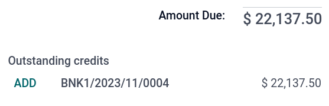
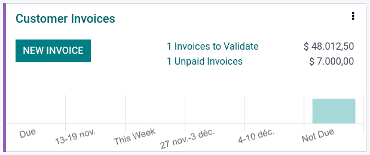
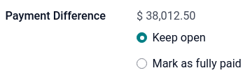

Pagos¶
En Odoo, los pagos se pueden vincular de manera automática con una factura o se pueden dejar como registros separados que se usarán en otra fecha.
Si un pago está vinculado a una factura entonces la cantidad por pagar de la factura se reducirá o liquidará. Puede tener muchos pagos relacionados a la misma factura.
Si un pago no está ligado a una factura. el cliente tendrá un crédito pendiente con su empresa, o su empresa tendrá un crédito pendiente con un proveedor. Puede usar esas cantidades pendientes para reducir o liquidar facturas sin pagar.
Registrar un pago para una factura¶
Cuando haga clic en el botón Registrar pago que aparece en una factura, se genera un asiento contable y se cambia la cantidad que se debe según la cantidad que se pagó. La contrapartida se refleja en la cuenta de recibos o pagos pendientes. En este momento es cuando se marca la factura como En proceso de pago. Después, cuando la cuenta pendiente se concilie con la línea del estado de cuenta bancario, la factura cambiará al estado Pagado.
El icono de información en la línea de pago muestra más información sobre el pago. Para ver información adicional. como el diario relacionado, haga clic en Vista.
Nota
Para poder registrar el pago la factura debe estar en el estado Publicado.
Si quita la conciliación de un pago seguirá apareciendo en sus libros pero ya no estará ligado a ninguna factura.
Si concilia o quita la conciliación de un pago en una divisa diferente, se crea un asiento de diario de manera automática para publicar la cantidad de pérdidas y ganancias tras el cambio de divisas.
Si concilia o quita la conciliación de un pago y una factura si tiene impuestos con base en efectivo, se crea un asiento de diario de manera automática para publicar la cantidad de impuestos con base en efectivo.
Truco
Si su cuenta bancaria principal está configurada como Cuenta pendiente y el pago se registra en Odoo (no a través de una cuenta bancaria relacionada), entonces las facturas se registran de manera automática con el estado Pagado.
Registrar pagos que no están ligados a una factura¶
Cuando se registra un nuevo pago a través del menú , este pago no se vinculará de inmediato a una factura. En su lugar, las cuentas por pagar o las cuentas por cobrar se concilian con las cuentas pendientes hasta que se concilien de manera manual con la factura relacionada.
Vincular facturas con pagos¶
Cuando valida una nueva factura y hay un pago pendiente (ya sea que el cliente no haya pagado o usted no haya pagado al proveedor) aparecerá una cinta azul. Para vincular la factura solo haga clic en Añadir en Créditos pendientes o Débitos pendientes.
La factura ahora se marca como En proceso de pago hasta que se haya conciliado con el extracto bancario correspondiente.
Pago en lote¶
Los pagos en lote le permiten agrupar varios pagos para facilitar la conciliación. También ayudan mucho cuando hay que depositar cheques en el banco o para pagos SEPA. Para crear pagos en lote vaya a o . En la vista de lista de los pagos puede seleccionarlos y agruparlos en lote, haga clie en .
Emparejamiento de pagos¶
La herramienta Emparejamiento de pagos abre todas las facturas sin conciliar y podrá procesar todas individualmente, ya que podrá vincular los pagos con las facturas a la vez en un mismo lugar. Para usar esta herramienta vaya al , haga clic en el menú desplegable ⋮ y seleccione Emparejamiento de pagos, o en .
Nota
Durante la conciliación, si la suma de los cargos y los abonos no cuadra queda el balance restante. Este balance se tiene que conciliar después o se tiene que borrar.
Conciliación de pagos por lote¶
Puede utilizar la función de conciliación por lotes para conciliar varias facturas o pagos pendientes de forma simultánea para un cliente o proveedor específico. Vaya a . Allí podrá visualizar todas las transacciones que aún no se han conciliado para ese contacto. Al seleccionar un cliente o proveedor aparecerá la opción Conciliar.

Registrar un pago parcial¶
Para registrar un pago parcial, haga clic en Registrar pago en la factura relacionada e ingrese el importe recibido o pagado. Al ingresar el importe aparecerá un mensaje que le pedirá que decida si Mantener abierta la factura o Marcar como pagado en su totalidad. Seleccione Mantener abierta y haga clic en Crear pago y la factura se marcará como Parcial. Seleccione Marcar como pagado en su totalidad si desea saldar la factura con una diferencia en el importe.
Conciliar pagos con estados de cuenta bancarios¶
Después de registrar el pago, el estado de la factura será En proceso de pago. Después, concilie el pago con la línea del estado de cuenta bancario relacionado para finalizar la transacción y hacer que la factura se marque como Pagado.